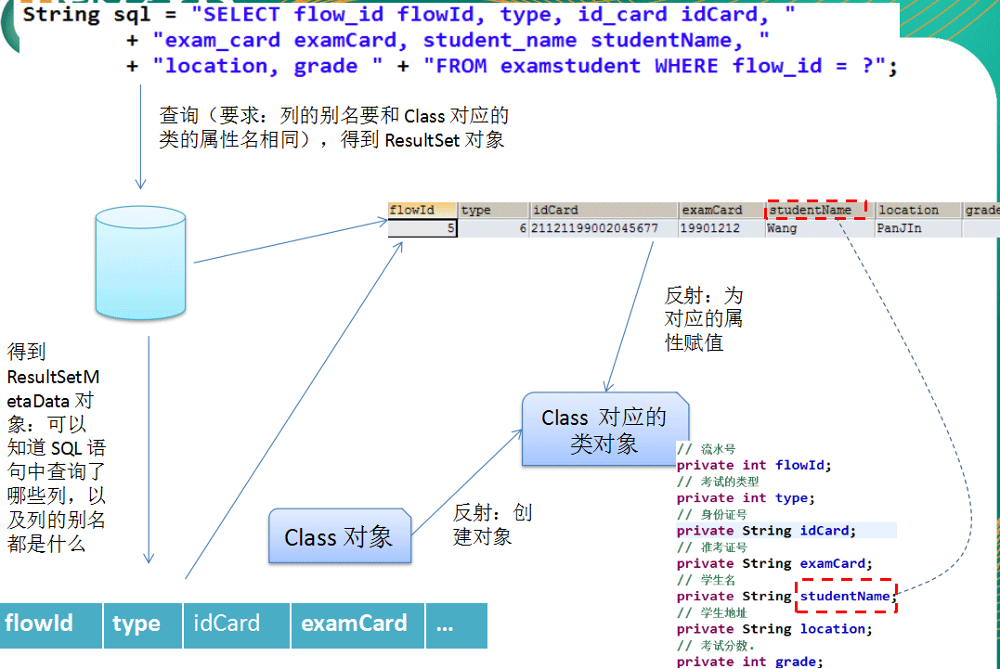

SQL 注入攻击
SQL 注入是利用某些系统没有对用户输入的数据进行充分的检查，而在用户输入数据中注入非法的 SQL 语句段或命令，从而利用系统的 SQL 引擎完成恶意行为的做法
对于 Java 而言，要防范 SQL 注入，只要用 PreparedStatement 取代 Statement 就可以了
PreparedStatement
可以通过调用 Connection 对象的 preparedStatement() 方法获取 PreparedStatement 对象
PreparedStatement 接口是 Statement 的子接口，它表示一条预编译过的 SQL 语句
PreparedStatement 对象所代表的 SQL 语句中的参数用问号(?)来表示，调用 PreparedStatement 对象的 setXXX() 方法来设置这些参数. setXXX() 方法有两个参数，第一个参数是要设置的 SQL 语句中的参数的索引(从 1 开始)，第二个是设置的 SQL 语句中的参数的值
PreparedStatement vs Statement
代码的可读性和可维护性.
PreparedStatement 能最大可能提高性能：
- DBServer会对预编译语句提供性能优化。因为预编译语句有可能被重复调用，所以语句在被DBServer的编译器编译后的执行代码被缓存下来，那么下次调用时只要是相同的预编译语句就不需要编译，只要将参数直接传入编译过的语句执行代码中就会得到执行。
- 在statement语句中,即使是相同操作但因为数据内容不一样,所以整个语句本身不能匹配,没有缓存语句的意义.事实是没有数据库会对普通语句编译后的执行代码缓存.这样每执行一次都要对传入的语句编译一次.
- (语法检查，语义检查，翻译成二进制命令，缓存)
PreparedStatement 可以防止 SQL 注入
Why PreparedStatement?
1.一开始使用的是 Statement,但是需要拼sql语句,非常复杂,容易出错。
2.PreparedStatement:是 Statement 的子接口,可以传入带占位符的SQL语句。并且提供了补充占位符变量的方法。
3.防范SQL注入攻击
例:
How PreparedStatement?
1.创建 PreparedStatement
2.调用 PreparedStatement 的 setXxx(int index, Object val) 设置占位符的值
3.执行 SQL 语句: executeQuery() 或 executeUpdate().注意: 执行时不再需要传入 SQL 语句。
利用反射及JDBC元数据编写通用的查询方法
使用 JDBC 驱动程序处理元数据
Java 通过JDBC获得连接以后，得到一个Connection 对象，可以从这个对象获得有关数据库管理系统的各种信息，包括数据库中的各个表，表中的各个列，数据类型，触发器，存储过程等各方面的信息。根据这些信息，JDBC可以访问一个实现事先并不了解的数据库。
获取这些信息的方法都是在DatabaseMetaData类的对象上实现的，而DataBaseMetaData对象是在Connection对象上获得的。

DatabaseMetaData类
DatabaseMetaData 类中提供了许多方法用于获得数据源的各种信息，通过这些方法可以非常详细的了解数据库的信息：
- getURL()：返回一个String类对象，代表数据库的URL。
- getUserName()：返回连接当前数据库管理系统的用户名。
- isReadOnly()：返回一个boolean值，指示数据库是否只允许读操作。
- getDatabaseProductName()：返回数据库的产品名称。
- getDatabaseProductVersion()：返回数据库的版本号。
- getDriverName()：返回驱动驱动程序的名称。
- getDriverVersion()：返回驱动程序的版本号。
ResultSetMetaData 类
可用于获取关于 ResultSet 对象中列的类型和属性信息的对象：
- getColumnName(int column)：获取指定列的名称
- getColumnCount()：返回当前 ResultSet 对象中的列数。
- getColumnTypeName(int column)：检索指定列的数据库特定的类型名称。
- getColumnDisplaySize(int column)：指示指定列的最大标准宽度，以字符为单位。
- isNullable(int column)：指示指定列中的值是否可以为 null。
- isAutoIncrement(int column)：指示是否自动为指定列进行编号，这样这些列仍然是只读的。
通用的查询方法:可以根据传入的sql还有class对象返回 SQL 对应的记录的对象。